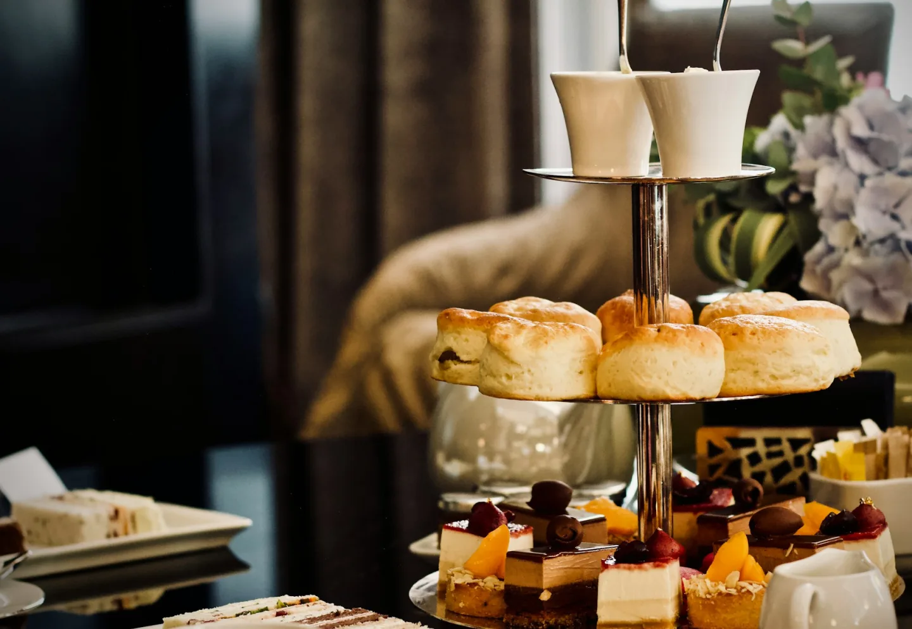
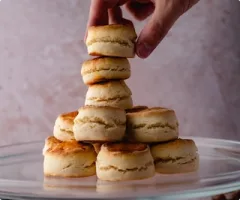
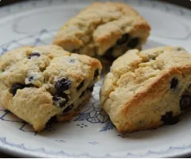
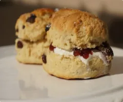
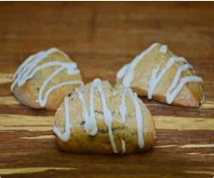
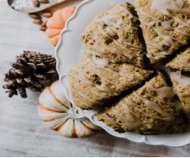
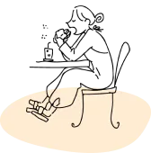

メニュー
単品メニュー
定番スコーン5種類と季節のスコーンを1種類ご用意しております。

プレーン
当店一番人気のスコーンです。 そのまま食べてもおいしいですが、真ん中の割れ目から半分に割り、クリームとジャムをつけてお召し上がりいただくのもおすすめです！

レーズン
プレーンのスコーンにレーズンを練り込みました。大粒のレーズンがゴロゴロと入ったスコーンは、お子様からも大人気です。
おすすめ

ミックスベリー
ストロベリー・ブルーベリー・ラズベリーを使用したスコーンです。3種のベリーに加えクリームもサンドしています。冷やして食べるのもおすすめです！

ホワイトチョコ
生地にもホワイトチョコを練り込んでいるため、一口かじると口の中でふわっとやさしい甘さが広がります。ブラックコーヒーによく合うスコーンです。

ブルーベリー
ヘルシーで女性からの人気も高いスコーンです。アフタヌーンティーとしてはもちろん、朝食にお召し上がりいただくのもおすすめです。ヨーグルトともよく合いますよ♪

パンプキン
10月の季節限定メニューは「パンプキン」です。かぼちゃを練り込んだ生地にナッツを加え、キャラメルソースをかけて仕上げています。ハロウィンのおやつにいかがですか？
セットメニュー
店内でもご自宅でもアフタヌーンティーが楽しめるよう
eat in・take outどちらもセットメニューをご用意しております。
eat in
店内でゆったりと・・

＊アフタヌーンティーセット
¥800
スコーン2種とドリンクがつきます
＊日替わりスコーン3種
¥700
ミニサイズのスコーンでいろんな味を
堪能できます
take out
アフタヌーンタイムを・・
＊おうち de アフタヌーン
¥800
スコーン2種とティーパック紅茶のセット
おうちでアフタヌーンティーが楽しめます
＊日替わりスコーン詰め合わせ
¥1,000
ミニサイズのスコーン
家族みんなで食べるならこちらがおすすめ